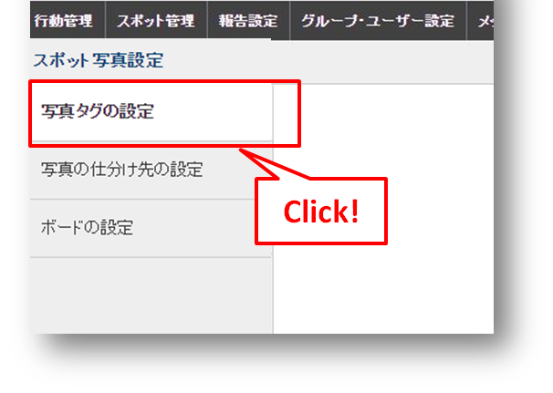

2 Web画面の設定¶
2-1 「スポット写真設定」を開く¶
【写真管理】を使いはじめるときは、まず「スポット写真設定」でいくつかの項目設定を行います。 メニューバーの「スポット管理」＞「スポット写真設定」をクリックします。

スポット写真設定画面になります。設定項目「写真タグの設定」「写真の仕分け先の設定」「ボードの設定」が左側メニューに表示されています。

2-2 スポット写真の設定項目¶
使いはじめるときに設定する項目は以下の３つです。
写真タグ¶
写真にタグをつけて、つけたタグで検索ができます。保存した写真のタグはあとから編集できます。 ->写真タグを設定する （リンク）
仕分け先¶
写真を種類ごとに保存するフォルダです。仕分け先＝「店舗写真」として、その下に「外観」「店内」「メニュー」というように、パソコンのフォルダのような階層構造で設定できます。 ->仕分け先を設定する（リンク）
ボード¶
写真撮一緒に保存されている情報（メタデータ=撮影日時、撮影者などの情報）を表示させる「ボード」を業務に合わせたフォーマットで設定します。写真に貼り付けた状態で保存されます。 ->ボードを設定する（リンク）
2-3 写真タグを設定する¶
「写真タグの設定」をクリックで、タグ設定画面になります。
最初は「写真タグがありません」と表示されています。 「写真タグを作成」ボタンから開始します。
タグの設定がゼロでも使用開始できます。

「写真タグを追加」ボタンをクリックして作成を開始します。
複数のタグを登録するときは、「写真タグを追加」をもう一度押します。

タグを使用するグループを選ぶことができます。指定しない場合は「すべてのグループで使えるタグ」となります。 ✕を押すとタグが削除されます。
「写真タグ」の決め方は？ タグは1枚の写真に複数つけることができ、あとで自由につけかえができます。タグに適した項目は、「提出用」「公式」「予備」などです。 「どこで撮影したか」「誰が撮影したか」などの情報は別途保存され、表示は「ボード」で設定（リンク）します。また、「建物外観」「建物内観」のような写真の分類は「仕分け先」で設定（リンク）しますので、これらをタグに設定する必要はありません。 （文章が長くてどうやってインデントをつけたらいいかわかりません・・・）
2-4 仕分け先を設定する¶
「仕分け先」は、スポット写真を保存するフォルダにあたるものです。
「写真の仕分け先の設定」をクリックすると、以下の画面になります。

「仕分け先を新規追加」をクリックすると、作成フォームが表示されます。
「仕分け先」は階層を作って細かく設定することができます。
「仕分け先」の決め方は？ 「仕分け先」の大項目は、たとえば「賃貸物件」「土地」「売買物件」など、スポットの特徴に合わせて設定します。仕分け先を１つも設定していなくでも運用は可能ですが、仕分け先の変更は運用後に1回限りと制限されています。写真の管理しやすさを考慮して、実際の業務に合った設定をしておきましょう。 -＞仕分け先を変更する（リンク）
（仕分け先の設定がゼロでもOKだったかわからなくなり、確認ができません・・・ここに書く注意事項よろしくお願いします） （文章が長くてどうやってインデントをつけたらいいかわかりません・・・）